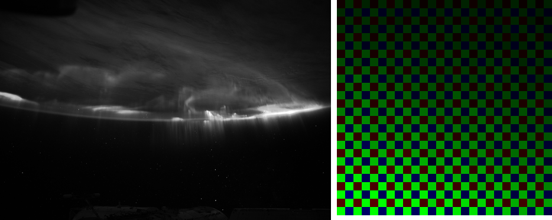
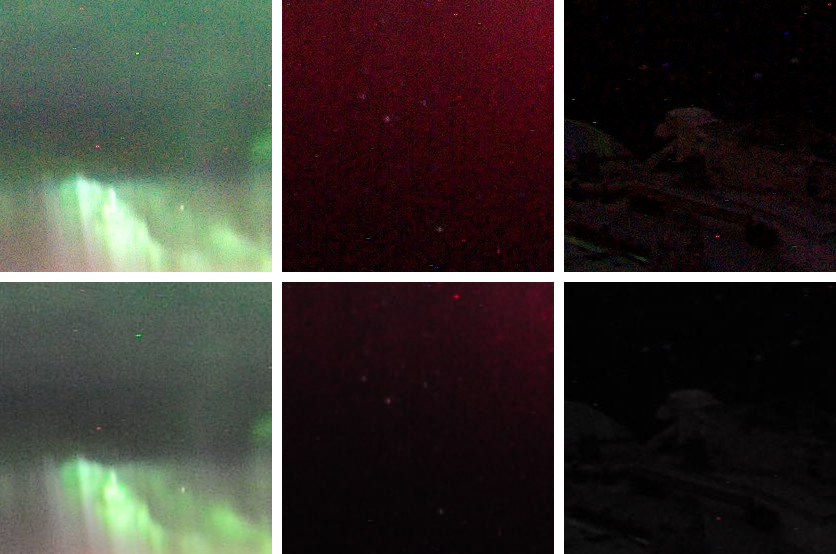

For nine chapters this book has enjoyed a luxury no photographer has ever had: it knew the scene. Every algorithm was graded against spectra we wrote, light we chose, a lens whose sins were coefficients in a file. This chapter gives the luxury up. The input is a real raw file from a real camera — and with it comes the condition every raw processor actually works under: no truth, no yardstick, nothing to measure against but other opinions. The pipeline runs anyway. That is the point.
10.1A real file arrives
The file is iss030e122639.NEF (NEF is Nikon’s raw flavor): a NASA photograph, in the public domain, of an aurora seen from the International Space Station — twelve megapixels from a Nikon D3S. It is also the file the rawpy project tests itself against, which is fitting, because rawpy (the Python binding of LibRaw, dcraw’s industrial descendant) is what reads the container for us. Chapter 1’s seventeen-byte header has become a thicket of TIFF tags, but what comes out is the same cargo: a 2844x4288 grid of 12-bit integers, a black level, a white level of 4095 — and a mosaic pattern which, on this camera, is the same RGGB the book has spoken since Chapter 1. (Our loader checks rather than assumes; a file whose mosaic starts on a different letter is refused, not miscolored.)
code/pxp/fast/develop.pydef load(path, crop=None):
"""Open a raw file and return what the chapters need: the
mosaic as floats on the 0..1 scale (Chapter 2's linearize, with
the maker's black and white levels standing in for ours), the
camera's own white-balance gains (Chapter 3's competitor, read
from metadata instead of estimated), and the profile matrix
(Chapter 5's sidebar, made important).
One hard requirement: the pipeline speaks RGGB. Files whose
visible mosaic starts on a different letter are refused rather
than silently miscolored. An optional crop (x, y, width,
height), snapped to even coordinates, develops a region instead
of the frame."""
raw = rawpy.imread(path)
letters = raw.color_desc.decode()
top = raw.sizes.top_margin
left = raw.sizes.left_margin
pattern = [[letters[raw.raw_pattern[(top + y) % 2]
[(left + x) % 2]] for x in range(2)]
for y in range(2)]
if pattern != [["R", "G"], ["G", "B"]]:
raise ValueError(f"mosaic is {pattern}, pipeline speaks "
"RGGB")
mosaic = raw.raw_image_visible.astype(float)
if crop:
x, y, wide, tall = (value - value % 2 for value in crop)
mosaic = mosaic[y:y + tall, x:x + wide]
height = mosaic.shape[0] - mosaic.shape[0] % 2
width = mosaic.shape[1] - mosaic.shape[1] % 2
mosaic = mosaic[:height, :width]
blacks = np.array(
[[raw.black_level_per_channel[raw.raw_pattern[(top + y) % 2]
[(left + x) % 2]]
for x in range(2)] for y in range(2)], dtype=float)
black = np.tile(blacks, (height // 2, width // 2))
mosaic = (mosaic - black) / (raw.white_level - black)
red, green, blue = raw.camera_whitebalance[:3]
gains = (red / green, 1.0, blue / green)
profile = [list(row) for row in raw.rgb_xyz_matrix[:3]]
return mosaic, gains, profile

One thing in the metadata deserves a welcome: the camera’s own white-balance estimate, three numbers its firmware committed at the moment of capture — Chapter 3’s competitor, met at last in the wild. For this frame it says gains of (2.25, 1.00, 1.69). With that, every stage the book built lines up behind one function:
code/pxp/fast/develop.pydef develop(path, stops=0.0, sharpen=0.6, quality=90,
method="ahd", out_width=None, crop=None):
"""The book, in one function: a raw file in, a JPEG out, every
line a chapter."""
mosaic, gains, profile = load(path, crop) # chs. 1-2
balanced = whitebalance.apply_gains(mosaic, gains) # ch. 3
image = getattr(demosaic, method)(balanced) # ch. 4
image = tone.reconstruct_highlights(image, gains) # ch. 7
xyz = colormatrix.apply_matrix(
image, matrix_from_profile(profile)) # ch. 5
linear = colormatrix.apply_matrix(xyz, XYZ_TO_LINEAR_SRGB)
linear = tone.exposure(linear, stops) # ch. 0
display = tone.apply_lut(linear,
bake_curve(filmic_curve())) # ch. 7
if sharpen:
display = detail.unsharp_mask(display, amount=sharpen)
if out_width: # ch. 9
out_height = round(display.shape[0]
* out_width / display.shape[1])
display = np.stack(
[resample.resample(display[:, :, c], out_width,
out_height)
for c in range(3)], axis=-1)
return jpeg.encode(display, quality) # ch. 9
Every call is the pipeline tier of a chapter, verified bit-identical to the loops you read; the only new code Chapter 10 needed is load above and one matrix adapter below. On this machine the whole run — twelve megapixels, AHD demosaic, JPEG out — takes 23 seconds. (The first attempt took an hour: the real file found a quadratic slowdown in Chapter 9’s bit writer that the simulator’s small frames never could. The fix is two lines, commented in the source, and the incident is this book’s thesis in miniature — you do not understand a pipeline until it has met a real photograph.) Here is what it makes, next to the rendering the file itself carries:
develop(path, stops=1.5), AHD demosaic, profile color, filmic S, unsharp mask, our own JPEG encoder at quality 90. Right: the full-size rendering embedded in the NEF. Same geometry, same aurora, same stars; a different photograph nonetheless — watch the clouds and the crimson. Section 10.3 is about that difference.
10.2The inventory: what truth got replaced with
Running one file is a demonstration. What generalizes is the inventory of substitutions — every place the simulator’s certainty gave way to something a real pipeline has to live with.
The sensor’s curves are gone. Chapter 5 fitted the color matrix against spectral ground truth. Nobody hands a raw processor the sensor’s sensitivity curves; what the ecosystem supplies instead is the maker’s profile — the XYZ-to-camera matrix of Chapter 5’s DNG sidebar, measured once in a lab, shipped in metadata, surfaced by LibRaw. Adapting it to the pipeline’s shape is a recipe as old as dcraw:
code/pxp/colormatrix.pydef matrix_from_profile(xyz_to_camera):
"""A real file's color matrix, adapted to this pipeline.
Chapter 5 fitted camera-to-XYZ against spectral truth. A real
raw file cannot offer that; what it carries instead (the
maker's profile, surfaced by libraw) is the lab's fit run the
other way — a matrix from XYZ *to* camera RGB, the ColorMatrix
of Chapter 5's DNG sidebar. Recovering the matrix the pipeline
wants is dcraw's thirty-year-old recipe: compose with the sRGB
primaries, force each row to sum to one so that a white-
balanced neutral stays neutral through the trip, and invert.
"""
xyz_from_srgb = _inverse(derive_srgb_matrix())
camera_from_srgb = _compose(xyz_to_camera, xyz_from_srgb)
normalized = [[value / (row[0] + row[1] + row[2])
for value in row] for row in camera_from_srgb]
return _compose(xyz_from_srgb, _inverse(normalized))
The test suite holds the adapter to the invariant Chapter 5 discovered for our own fitted matrix: a white-balanced neutral must land on the D65 white point, and it does, to four decimals. The book’s matrix came from twelve patches of designed spectra; the D3S’s came from someone’s profiling bench two decades ago; both are the same kind of object, doing the same job, with the same metameric residual nobody can remove.
The illuminant is gone. Chapter 3 computed reference gains from the light itself. Here nothing knows the light, and the frame is a worst case on purpose — most of it is starfield black, and the brightest thing in it is green. Chapter 3’s two estimators, run on this real mosaic, tell the whole story of assumption-driven inference. Gray-world proposes (2.34, 1.00, 1.82) — startlingly close to the camera’s (2.25, 1.00, 1.69), but look at why: not because the scene’s colors average out, but because most of the frame is darkness and darkness is neutral. Right answer, wrong reason, no credit. White-patch proposes (3.46, 1.00, 2.84) — it found the brightest surface, assumed it white, and that surface was an aurora; follow its advice and the sky goes magenta. The camera’s own three numbers win not because its algorithm is smarter but because it owned the problem at capture time, with the whole scene in front of it and a century of firmware heuristics behind it. This is why raw processors default to as shot.
The calibration frames are gone. Chapter 2 found the sensor’s liars by comparing a dark frame against a flat one. No such frames come with a downloaded NEF — and this particular sensor has spent months in orbital radiation, so its hot pixels are not hypothetical: they are the bright confetti in the 1:1 crops below, surviving our whole pipeline untouched (and sharpened, since Chapter 8 warned that sharpening raises whatever is there). Real processors handle them without calibration frames by single-frame outlier tests — Chapter 8’s median filter, deciding that a pixel wildly unlike every same-color neighbor is a liar, not a star. Telling those two apart in a starfield is a genuinely hard call, and tools get it wrong in both directions: “star eater” is an accusation with its own forum threads.
The lens is gone. Chapter 6 inverted flaws whose coefficients we wrote. This NEF names its camera but its maker’s lens corrections are not in any public tag, and the book does not guess: develop applies no lens correction, disclosed here. The night sky is a forgiving subject for the omission — vignetting is invisible on black, and there are no straight lines for distortion to bend — but a daylight architectural frame through the same pipeline would show both, and the fix is Chapter 6’s sidebar made real: the Lensfun database, fitted coefficients for thousands of lenses, slotted where our lenscorrect stages sit.
Exposure and tone are nobody’s to know. The stops=1.5 in the caption was chosen by us, to bring our render’s overall brightness near the embedded one so the comparison is about character rather than lightness. The filmic S, the per-channel application, the sharpening amount — Chapter 7 already said it: the look is chosen, and on a real file there is no longer even a reference to deviate from. What the simulator’s death removes is not capability but grading: this chapter contains no PSNR, no ΔE, no table with truth in the denominator — for the first time in the book, because for the first time there is no truth to put there.
10.3Why no two renderings agree
Now the comparison itself, starting with a disclosure about the yardstick. The rendering embedded in this NEF is not the camera’s: its EXIF names its author as dcraw v9.26 — somewhere in NASA’s processing chain, the file’s preview was regenerated by the very program whose lineage runs through every open-source raw tool. So the right-hand panels above are dcraw’s opinion of this negative. A Nikon body’s own JPEG would be a third opinion, Lightroom’s a fourth, and none of them is an error.
Read the crops with the book behind you and the differences sort themselves by chapter. Geometry and detail agree — demosaicing is a solved-enough problem that AHD and dcraw’s default are indistinguishable at viewing size. Color and tone disagree everywhere, because they are not problems, they are positions: dcraw’s default applies a plain power curve and a conservative brightening; ours applies Chapter 7’s filmic S per channel, which deepens the crimson band, adds the saturation the S always adds, and lets the moonlit clouds keep a violet cast that dcraw’s grayer rendering suppresses. Every commercial tool takes its own position on these same stages — that is what a “look” is — and the industry’s inability to agree is not a scandal but a definition: a raw file is a negative, and development is interpretation. The reproducible part, the part this book spent ten chapters on, is everything up to the interpretation: what the numbers mean, what order preserves them, what each operation costs.
One promised monster remains. Chapter 5 deferred gamut trouble to “images that genuinely hurt,” and an aurora — spectral line emission, about as saturated as nature gets — is the designated bully. Measured after the profile matrix, 10.2% of this frame’s pixels carry a negative sRGB channel; but nearly all of that is an old friend, Chapter 2’s preserved noise flickering around black, and it must be left alone for the averages to stay true. Genuinely out-of-gamut color — beyond any noise excuse — is 0.23% of the frame, concentrated where the eye would guess: the deepest crimson, reaching a linear red-channel deficit of −0.60. The book’s answer is still the disclosed clip at output, and on this frame the clip is defensible; the moment it stops being defensible (a whole flower bed of saturated reds, a stage lit by LEDs) is the moment the gamut-mapping literature pointed to in Chapter 5 becomes required reading rather than a pointer.
10.4Onward
Where to go from here
Read: the dcraw source (one file, famously terse, every stage of this book in a few thousand lines of C — a rite of passage); RawTherapee’s RawPedia and darktable’s documentation and source, which are this book’s chapters at production strength, three ways each; LibRaw’s docs for the container jungle load skated over; Markesteijn’s X-Trans demosaic in RawTherapee for what Chapter 4’s ideas look like off the Bayer grid; and Szeliski’s Computer Vision: Algorithms and Applications for the field this pipeline is one corner of. Do: point develop at your own camera’s files (it will refuse anything non-RGGB — extending load is the natural first patch); wire Lensfun coefficients into the Chapter 6 stages; or take any chapter’s reference loops and make them yours. The appendices catalogue the pxp API, the vocabulary, and a further-reading list split by what is safe to reimplement.
Chapter 0 made one promise: that if something happens to a pixel, you can watch it happen. Between then and now, a photograph has been followed — photon by photon, electron by electron, byte by byte — from a scene that existed only as arithmetic to a JPEG that any browser opens, and then the same machinery, unchanged, developed an aurora photographed from orbit. The file this chapter produced is not the best possible rendering of that negative; it is something rarer — a rendering with no unexplained steps. The long way from light to JPEG turns out to be walkable, and now you have walked it.